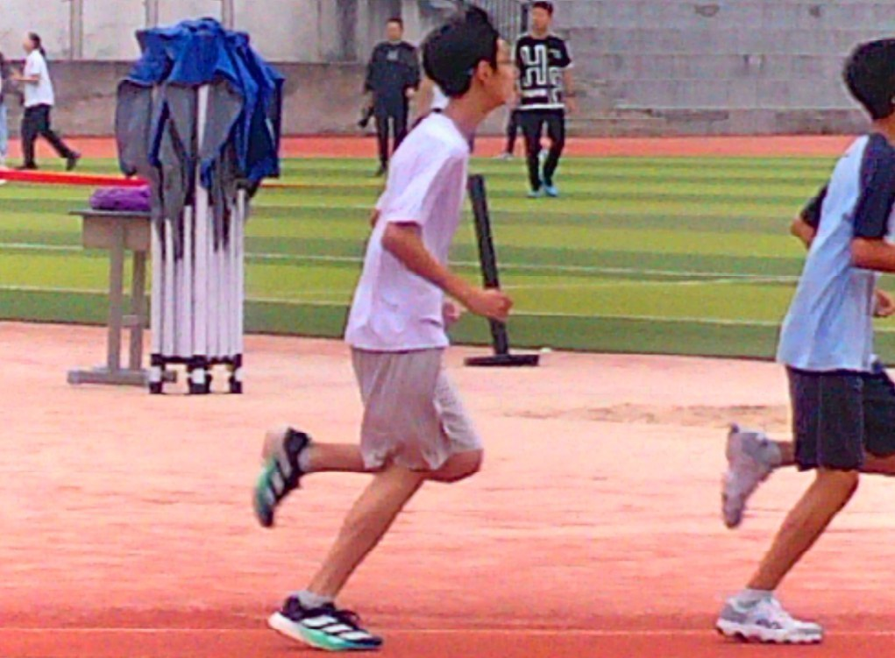
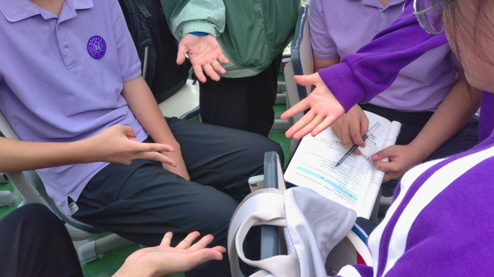

中长跑
败者为王 —— 蒋泓宇1000米遗憾落败第九
天空仍旧是一片灰暗，太阳迟迟不肯出来，阵阵冷风刮过他的脸颊和小腿，
在这样的天气下，男子1000米比赛拉开帷幕。

▲ 赛道上的全力一搏。
发令枪轰然一响，选手们如离弦之箭奔出起点。蒋泓宇稳在本组队伍后列，上身微微前倾，双臂规律摆动，脚掌轻踏跑道，均匀分配体力。风擦过他的耳畔，裹挟着看台上此起彼伏的呐喊。
赛程过半，难熬的极点如期袭来。他的眉头紧紧拧起，下颌绷紧，嘴唇泛出苍白，粗重的喘息不断从口鼻涌出。豆大的汗珠顺着额角滚落，划过脸颊，坠落在跑道上。双腿像灌满铅水，每一次抬起都格外艰难，步幅不由自主地缩小。同组选手紧紧跟在身侧，几番拉扯赶超，他咬紧牙关，攥紧拳头，奋力前后摆臂，竭力稳住奔跑的节奏，不肯落下。
两圈过后，他猛地抬眼，目光牢牢锁定前方的终点线。肩膀微微耸动，面部肌肉紧绷，额上青筋隐约可见，双臂加快摆动，调动身体残存的力量奋力冲刺。跑道两侧，全班同学的呐喊一浪高过一浪，秋风裹挟着加油声，伴他冲向终点。
冲线的那一刻，他脚步踉跄，缓缓停下。本组成绩出炉，他拿下小组第二。可全部选手总排名公布，位列第九，遗憾与领奖台擦肩而过。他弯下腰，双手撑住膝盖，胸膛剧烈起伏，大口大口地喘息，眼底藏着一丝难以掩饰的失落。
记者 江科毅 供图 王未
短跑
"楷"旋而归，"宸"胜归来 —— 黄楷宸于男子200米取得第五
他站在200米的起跑线上，屏息敛声，隐隐听得心脏的震动。
不急不躁，不卑不亢，他自有十足打算。
他站在200米的起跑线上，屏息敛声。隐隐听得心脏的震动。"各就位"他缓缓弯下身躯，双手按住塑胶跑道。稳住心中的紧张。"预备"，隆起身躯，将全身的肌肉如弦一般绷紧，目光如匕首般滑向前方，心中早已做好全盘的计算。
发令枪响，全身的神经刺激起来，起步，蹬腿，摆臂……不急不躁，不卑不亢。不去看别人的速度，他自有十足打算。挺起脊背，身体向内压去，外侧手臂加大摆幅。风声历历，划过耳畔，似被他的势态给激荡起来。地皮鼓动，颇有冲冠之势。
不觉中，弯道已过，来到最后一百米知道冲刺，他的对手已被他甩去身后。现在，他是和自己比拼，是和所有质疑比拼。来吧！更快的摆臂，更快的交替摆腿，步幅与步频，全靠肾上腺素与意志了！三十米，十米，五米，近了，近了，更近了！最终，一个飞跃，跳过终点！赢了！
记者 江科毅 供图 王未
场边
赛场之下，别样光景

▲ 场边抓拍：一场闹剧般的青春一瞬。
赛场之下自有一番光景。有人围坐闲谈，有人静阅书页，有人追逐嬉闹。也有伙伴正俯身潜行，眼疾手不快的妄图将奶龙搁在朱朱耳机上给他拍照。朱朱抬起三分震惊三分无语三分可笑余下一丝凉薄的眼神望向他。众人哄堂大笑。"咔嚓"快门轻响，快闪的白光定格这场嬉闹，在这瞬间与永恒的交织中留住鲜活的青春一瞬。
记者 黄诗情